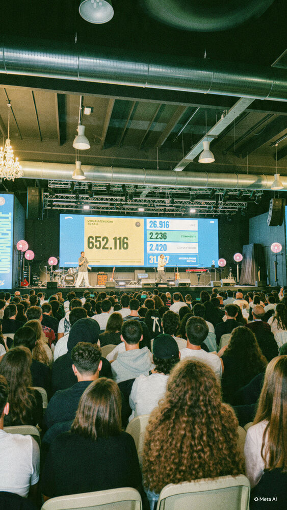

Report della campagna · Yous Conference 2026
31 ottobre 2026 · Italia
Jesus Goes Viral: 316 giovani hanno condiviso la loro fede online.
dei giovani mobilitati ha condiviso pubblicamente la propria fede online
646giovani mobilitati, suddivisi in 66 gruppi
316hanno condiviso la propria fede online, con un post a testa
684Kvisualizzazioni nelle prime 24 ore
Il 31 ottobre abbiamo avuto l’opportunità di guidare un’attivazione di due ore alla Yous Conference 2026, un evento giovanile nazionale organizzato dalla Chiesa Sabaoth a Milano, che ha riunito 850 giovani provenienti da oltre 80 chiese.
Alle 15:00 abbiamo lanciato «Jesus Goes Viral», una sfida che invitava i ragazzi a creare e condividere contenuti sulla propria fede sui loro profili social. Abbiamo fornito format creativi ed esempi per aiutarli a comunicare il Vangelo in modo coinvolgente e autentico. Due ore dopo, i video sono stati pubblicati tutti insieme.
I risultati
316 dei 646 giovani che abbiamo mobilitato, quasi uno su due, hanno condiviso pubblicamente la propria fede online, molti per la prima volta. Tra loro c’erano 35 leader di gruppo e 219 dei partecipanti avevano meno di 18 anni.
Quei post hanno raggiunto oltre 684.000 visualizzazioni nelle prime 24 ore e circa il 79% delle visualizzazioni dei reel dell’evento è arrivato da persone che non seguono l’account.



I risultati sul maxischermo · Giovani che creano contenuti · Condividere la fede online
Guarda alcuni dei video
Abbiamo incluso alcuni esempi dei video, così puoi vedere come si è svolta la sfida nella pratica. Tocca un video per guardarlo.
Cosa viene ora
Un nuovo approccio all’evangelizzazione sta prendendo forma.
Stiamo esplorando come gli eventi locali possano diventare veri e propri centri di creazione di contenuti, preparando i giovani a portare il Vangelo oltre le mura della chiesa, all’interno delle loro comunità digitali.
Ma il nostro cuore non si ferma al raggiungimento delle persone online. Vogliamo che chi incontra il Vangelo abbia l’opportunità di rispondere, entrare in contatto con qualcuno e diventare parte di una chiesa locale, dove poter crescere come discepolo di Gesù.
Stiamo ancora sviluppando questo modello, ma guardiamo con fiducia a ciò che ci aspetta.
La nostra visione è vedere una generazione di pionieri digitali preparati e attivati per raggiungere la propria generazione con il Vangelo.
Prega con noi
Ti chiediamo di pregare per noi mentre continuiamo a esplorare e sviluppare questo approccio.
Grazie per far parte di questo viaggio!